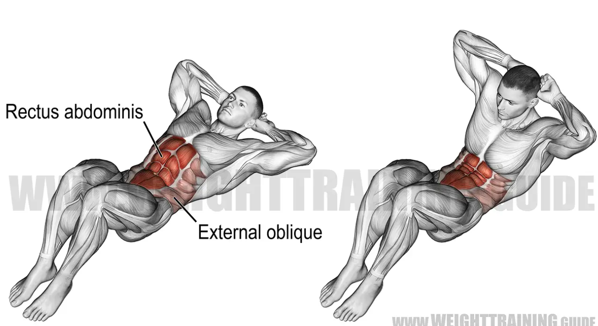
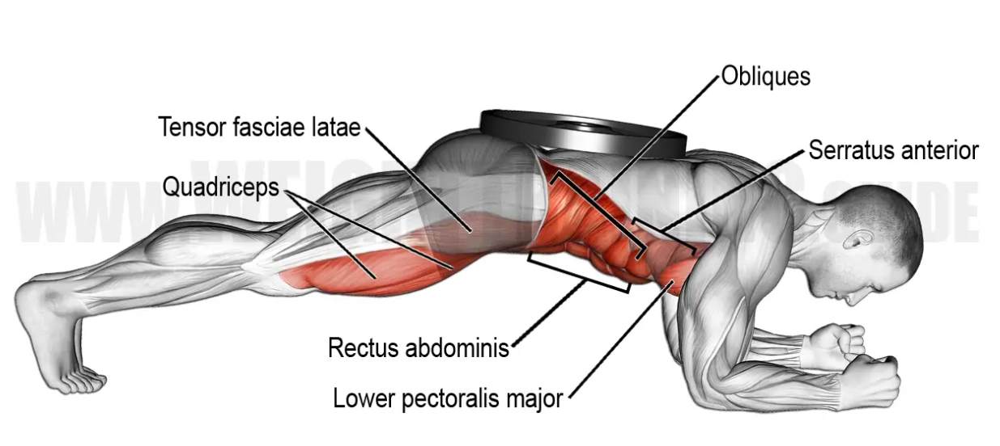
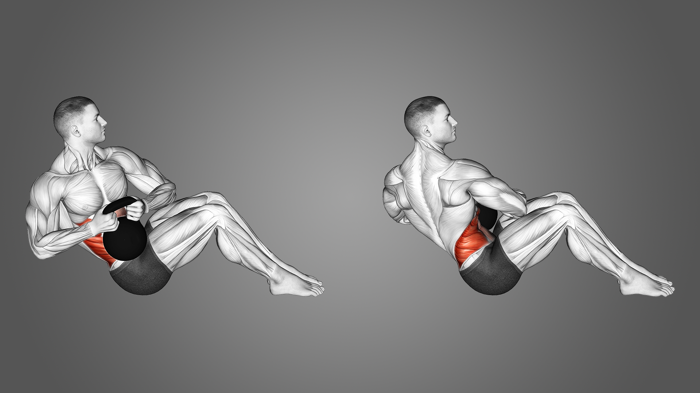
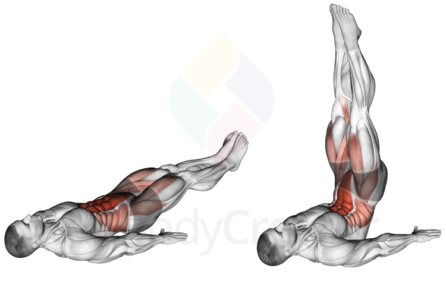

About the Back Muscles
The abdominal muscles, often referred to as the abs, are a group of muscles located in the front of the abdomen. The primary function of the abdominal muscles is to stabilize the trunk, support the spine, and facilitate movements such as bending forward, twisting, and maintaining posture.
Exercises for Training Back
1. Crunches
Lie on your back with your knees bent and feet flat on the floor. Place your hands behind your head or across your chest and lift your shoulders off the ground by contracting your abdominal muscles. Avoid pulling on your neck with your hands.

2. Plank
Start in a push-up position, with your weight supported by your hands (or elbows) and toes. Keep your body in a straight line from head to heels, engaging your core muscles to hold the position. Aim to maintain the plank for a set amount of time.

3. Russian Twists:
Sit on the floor with your knees bent and feet lifted off the ground. Lean back slightly, keeping your back straight, and clasp your hands together in front of you. Rotate your torso to the left, then to the right, while keeping your core engaged.

4. Leg Raises
Lie on your back with your legs straight. Lift your legs off the ground, keeping them together, until they are perpendicular to the floor. Slowly lower them back down without letting them touch the ground, then repeat.
